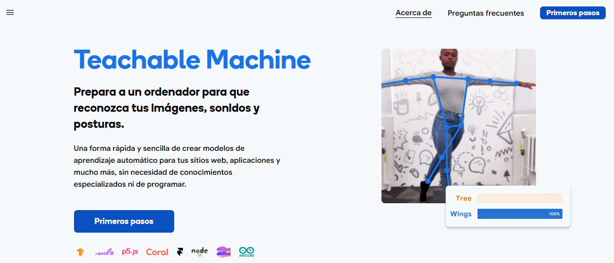

Teachable Machine es una herramienta creada por Google que permite a cualquier persona —sin necesidad de saber programación— entrenar modelos de machine learning de forma sencilla.

Con Teachable Machine podremos crear:
- Modelos de reconocimiento de imágenes, sonidos o posturas (movimientos del cuerpo).
- Entrenar el modelo subiendo tus propios datos (por ejemplo, fotos o grabaciones de audio).
- Exportarlo para usarlo en proyectos web, aplicaciones o dispositivos como Arduino.
Todo el entrenamiento se realiza directamente en cualquier navegador, así que es muy accesible.